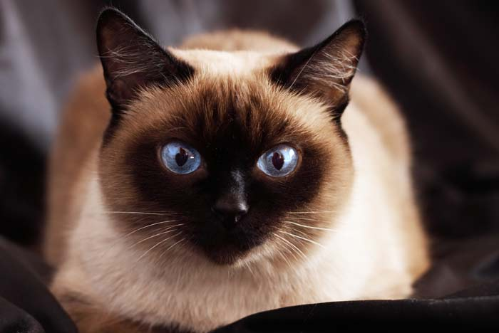

¿Que es un gato?
Según wikipedia el gato doméstico (Felis silvestris catus), llamado simplemente gato, minino, michino, micho, mizo, miz, morroño o morrongo, entre otros nombres coloquiales, es un mamífero carnívoro de la familia Felidae. Es una subespecie domesticada por la convivencia con el ser humano.
Origen del nombre gato.
El nombre actual en muchas lenguas proviene del latín vulgar catus. Paradójicamente, catus aludía a los gatos salvajes, mientras que los gatos domésticos, en latín, eran llamados felis.
Mutaciones en los gatos.
Como resultado de mutaciones genéticas, cruzamiento y selección artificial, hay numerosas razas. Algunas, como la raza Sphynx o la Peterbald están desprovistas de pelo; otras carecen de cola, como los gatos de la raza Manx, y algunas tienen coloraciones atípicas, como los llamados gatos azules.
Comunicación de los gatos y convivencia con el ser humano.
El gato se comunica a través de vocalizaciones. Las más populares son su característico maullido y el ronroneo, pero puede aullar, gemir, gruñir y bufar.Además, adopta poses o expresiones que informan, a sus congéneres, sus enemigos o sus cuidadores, de su ánimo o sus intenciones.
Junto con el perro, es el animal doméstico más popular, como mascota, como ayuda en la lucha contra roedores o ambas cosas.
Por su amplio abanico de presas potenciales, por su alta eficiencia como depredador, y por su elevado éxito reproductivo especialmente si se suministra artificialmente alimento a las colonias sin tomar medidas adicionales para limitar su fertilidad el gato doméstico está incluido en la lista 100 de las especies exóticas invasoras más dañinas del mundo de la Unión Internacional para la Conservación de la Naturaleza.
Razas de gatos más populares:
| Persa | Azul ruso | Maine coon | Siamés | Abisinio |
|---|---|---|---|---|

|

|

|
 |

|
Tabla de países con más gatos en el mundo
| País | Cantidad de gatos | Porcentaje con respecto a la población de humanos |
|---|---|---|
| Estados Unidos | 76,5 millones | 25% |
| China | 53 millones | 4% |
| Rusia | 12,5 millones | menos del 4% |